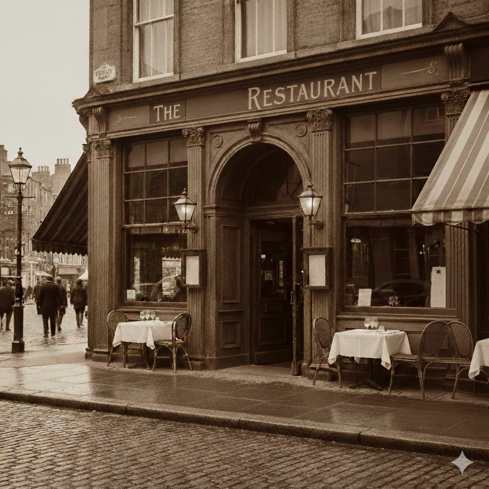

Nossa história
Num canto movimentado da cidade, entre buzinas apressadas e passos distraídos, existia um restaurante pequeno chamado The Restaurant. À primeira vista, era só mais uma portinha simples com mesas de madeira e cheiro constante de comida recém-feita. Mas, para quem entrava ali, o lugar tinha algo diferente. Dona Lúcia, a proprietária, dizia que o segredo não estava apenas nas receitas, mas na intenção com que cada prato era preparado. Ela conhecia os clientes pelo nome, lembrava do que cada um gostava e sempre perguntava como tinha sido o dia. O restaurante virou ponto de encontro de histórias: estudantes revisando provas, trabalhadores almoçando em silêncio cansados, casais em conversas longas e até amizades que começaram dividindo a mesma mesa.